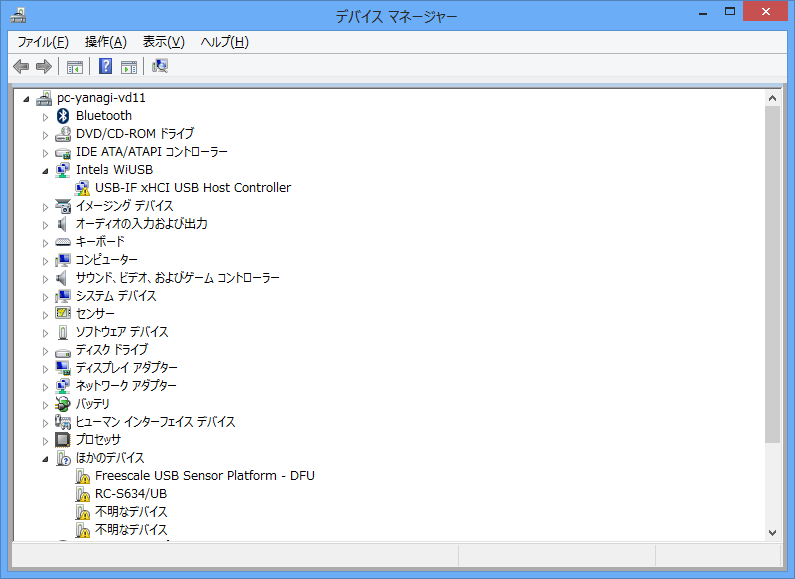
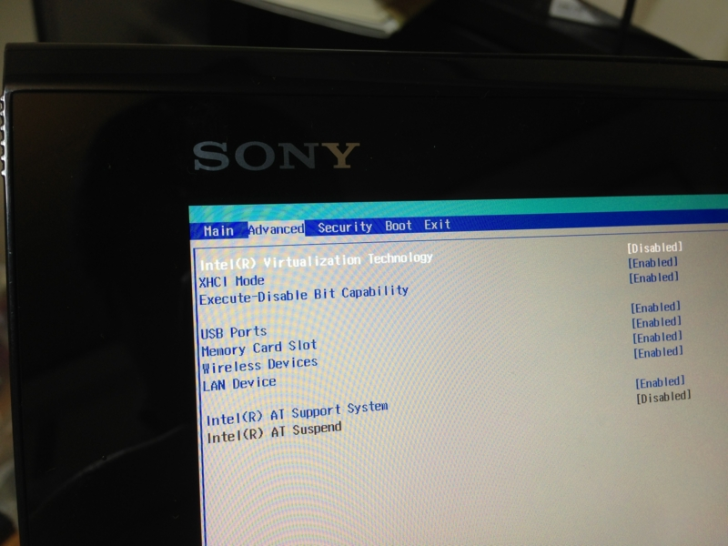

VAIO Duo 11 のお手入れ
公開日：
リカバリーディスクが働いてくれない

お正月なので、VAIO Duo 11 の再インストールでもしようかなぁと思ったいたのだけど*1、事前に作成しておいたリカバリディスク（Blu-ray）がうんともすんとも言わない。SSD 上のリカバリ領域は削除してしまっている。
これはこまった／(＾o＾)＼
どうやら僕だけじゃないみたいなので、フィードバックでも送ってみようと思う。
欠けたドライバーのインストール
VAIO Duo 11 に普通の Windows 8 Pro をインストールした状態では、GPS や NFC などが動作しない。とりあえずこれだけでも何とかしたい。リカバリディスクが動けばこんな苦労はせずに済むのだが……

リカバリディスクはブートしないものの、VAIO Care の実行はとりあえずできるみたい。これを利用して欠けたドライバーをインストールすることにした。

いくつかのドライバーはインストールできたものの、多くはインストール処理中にエラーが発生してインストールできず。とことん使えない子だな。

しょうがないので、SVD11219CJB | 製品別サポート | パーソナルコンピューター VAIO® | サポート・お問い合わせ | ソニー にあるドライバーを片っ端からインストール。GPS/NFC といったデバイスも動作するようになり、実用上は問題がなさそう。
ちなみに、すべてが動作した状態のデバイスマネージャーの画面は以下のページで公開されている。
Windows Phone SDK の修復

WindowsPhoneArch に参加してきました！ - だるろぐ をよーく見るとわかるかのしれないけど、うちの VAIO Duo 11 にインストールされている Windows Phone SDK 8.0 はなぜか英語版。まぁ、これでも実用上問題はないのだけど、大文字のメニューが気に入らないので、日本語版にしておきたくなった。ついでに Hyper-V が無効で、エミュレーターが動作しなかった問題も解決。BIOS で 仮想化支援機能を Enabled にしておく。
いろいろ試行錯誤してみたのだけど、「Windows Phone SDK 8.0」（Visual Studio 2012 Express for Windows Phone）を一度アンインストールし、「Visual Studio 2012 Express for Windows 8」の日本語版をインストール（どうせいつか使うし）、そのあとに「Windows Phone SDK 8.0」の日本語版をインストールするという手順を踏んで、無事、Windows Phone SDK 8.0 が日本語化された。
単に再インストールするだけでは日本語版になってくれなかったんだよね……。

*1:色々実験していて環境が汚れてしまったけど、そろそろ平常運用しようと思うので